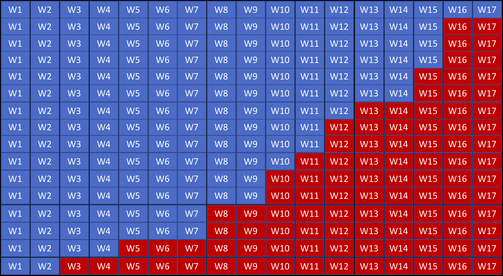

Embracing Diversity: Searching over multiple languages
Suneel Marthi
Jeff Zemerick
October 17, 2018
Activate Conference, Montreal
$WhoAreWe
Suneel Marthi
@suneelmarthi
- Member of Apache Software Foundation
- Committer and PMC on Apache Mahout, Apache OpenNLP, Apache Streams
Jeff Zemerick
@jzonthemtn
- Software Engineer and Cloud Architect
- Committer and PMC on Apache OpenNLP
Agenda
- What is Multi-Lingual Search?
- Why Multi-Lingual Search?
- What is Neural Machine Translation?
- Introduce a Multi-Lingual Pipeline
What is Multi-Lingual Search ?
- Searching
- over content written in different languages
- with users speaking different languages
- both
- Parallel corpora
- Translating queries
- Translating documents
Why Multi-Lingual Search ?
Embracing diversity
- Most online tech content is in English
- Wikipedia dumps:
- en: 62GB
- de: 17GB
- it: 10GB
- Good number of non-English speaking users
- A lot of search queries are composed in English
- Preferable to retrieve search results in native language
- … or even to consolidate all results in one language
Use-case 1 — tech domain, native first
Use-case 2 — native only ?
Neural Machine Translation
Neural Machine Translation (NMT)
Generate Translations from Neural Network models trained on Bilingual Corpora.
Translation happens per a probability distribution one word at time (no phrases).


NMT is deep learning applied to machine translation.
"Attention Is All You Need" - Ashish Vaswani, Noam Shazeer, Niki Parmar, Jakob Uszkoreit, Llion Jones, Aidan N. Gomez, Lukasz Kaiser, Illia Polosukhin
Google Brain https://arxiv.org/abs/1706.03762
NMT versus SMT at Scale
| Sockeye (NMT) | Apache Joshua (SMT) |
|---|---|
| High Quality Translations | Reasonable Quality Translation |
| Python 3 / C++ | Java / C++ |
| Model size ~256 MB | Model size 60GB-120GB |
| Simple Training Process | Complicated Training Process |
| 400 lines of code | Relatively complex implementation |
| High translation costs | Low translation costs |
NMT Samples
Jetzt LIVE: Abgeordnete debattieren über Zuspitzung des Syrien-Konflikts.
last but not least, Members are debating the escalation of the Syrian conflict.
Sie haben wenig Zeit, wollen aber Fett verbrennen und Muskeln aufbauen?
You have little time, but want to burn fat and build muscles?
NMT Challenges – Input
- The input into all neural network models is always a vector.
- Training data is always parallel text.
- How do you represent a word from the text as a vector?
Embedding Layer

NMT Challenges – Rare Words
Ok, we can now represent 30,000 words as vectors, what about unseen words?
NMT Challenges – Byte Pair Encoding (BPE)

Rico Sennrich, Barry Haddow and Alexandra Birch (2016): Neural Machine Translation of Rare Words with Subword Units Proceedings of the 54th Annual Meeting of the Association for Computational Linguistics (ACL 2016). Berlin, Germany.
Byte Pair Encoding
"positional addition contextual"Byte Pair Encoding
"posiXonal addiXon contextual"ti = X
Byte Pair Encoding
"posiXonY addiXon contextuY"ti = X
al = Y
Byte Pair Encoding
"posiZnY addiZn contextuY"ti = X
al = Y
Xo = Z
Byte Pair Encoding
theseing
other
s,
must
Member
NMT Challenges – Jagged Tensors
Input is not sorted by length.
Jagged Tensors cont.

Jagged Tensors cont.
Jagged Tensors cont.

NMT Challenges – Cost
- Step 1: Create great profiling tools, measurement.
- Step 2: Get specialists to optimize bottlenecks.
- Step 3: ???
- Step 4: Profit.
New layer norm, top-k, batch-mul, transpose, smoothing op. 3.5x speedup so far. Working in branches:
https://github.com/MXNetEdge/sockeye/tree/dev_speed
https://github.com/MXNetEdge/incubator-mxnet/tree/dev_speed
TVM
TVM is a Tensor intermediate representation(IR) stack for deep learning systems. It is designed to close the gap between the productivity-focused deep learning frameworks, and the performance- and efficiency-focused hardware backends. TVM works with deep learning frameworks to provide end to end compilation to different backends.
https://github.com/dmlc/tvm
Alibaba TVM Optimization
http://tvmlang.org/2018/03/23/nmt-transformer-optimize.html
Alibaba TVM Optimization

Facebook - Tensor Comprehensions

https://research.fb.com/announcing-tensor-comprehensions/
Document Summarization
| Extractive | Abstractive |
|---|---|
| Original Content | New Content |
| Easier | More Difficult |
Summarizing results on-the-fly gives flexibility.
Multilingual Search Pipeline
Accepts English text, translates it, searches, translates and summarizes search results.
- Apache NiFi
- Apache OpenNLP
- Sockeye
- Solr
- "Get To The Point: Summarization with Pointer-Generator Networks"
Apache NiFi
- Data flow orchestration
- Able to ingest and manipulate data using processors
- Organized into flows
- Out-of-the-box QuerySolr processor
- Executes a query against a Solr instance
- Results returned as XML
- NiFi: https://nifi.apache.org/
- Code for the pipeline: https://github.com/jzonthemtn/multilanguage-search
Apache OpenNLP
- Library of common NLP tools
- Our pipeline uses:
- Language detection
- Sentence extraction
- Tokenization
- Byte-Pair Encoding (BPE)
- https://opennlp.apache.org
Sockeye
- Neural Machine Translation tool
- Written in Python and based on MXNet
- Sequence-to-sequence framework that supports:
- Deep Recurrent Neural Networks with Attention
- Transformer Models with self-attention
- Fully convolutional sequence-to-sequence models
- https://github.com/awslabs/sockeye
Solr
Indexed plain text news articles:
- ~100,000 English news articles
- ~30,000 German news articles
Pointer-Generator Networks
- Performs abstractive summarization of search results
- Built on Tensorflow
- Abigail See, Peter J. Liu, Christopher D. Manning
- https://github.com/abisee/pointer-generator
NiFi Flow

The Code and NiFi Flow
Credits
- Tommaso Teofili (Adobe - Rome)
- Joern Kottmann, Bruno Kinoshita (Apache OpenNLP)
- Kellen Sunderland, Sockeye Team (Amazon - Berlin)